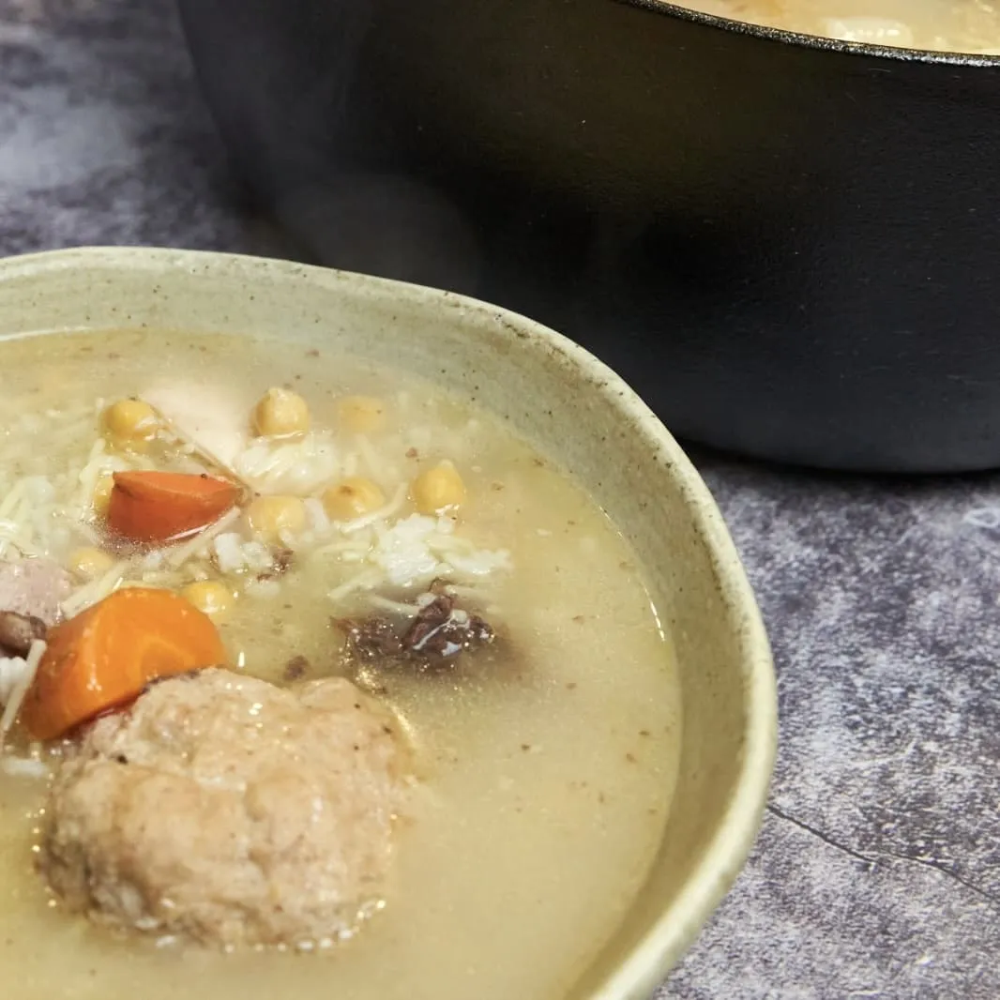

⏲ 30 minuts 👥 10 racions

Ara que sembla que ha arribat el fred de debò, què millor que una bona sopa? Us proposem fer aquesta
olla aranesa, un plat d’allò més consistent per entrar en calor i agafar reserves davant les baixes
temperatures
Ingredients:
- Carns: 100g de gallina vella, 100 g de cansalada, 4 botifarres blanca, 2 botifarres negres, 1/2 os de pernil.
- Per a la pilota: 250 g de carn picada de porc, 1 ou, pa de motlle, farina de pa.
- Verdures: 2 alls, 1 ceba, 1/4 de col, 2 porros, 1 branca d’api, 1 patata grossa, 4 pastanagues, 1 xirivia.
- 200g de cigrons cuits
- 100g de fideus
- 100g d'arròs
- Oli, sal i pebre
- En una olla ben grossa, posem tota la carn de la recepta, exceptuant la de la pilota i les botifarres. Cobrim amb aigua i coem a ritme de xup-xup uns 30 minuts, desescumant les impureses i el greix de la superfície.
- Afegim les verdures tallades grosses i netes, exceptuant la patata, i deixem coure uns 60 minuts més.
- Afegim la botifarra blanca i negra i deixem coure uns 15 minuts. Aturem el foc i deixem reposar 24 hores.
- Preparem les pilotes mesclant tots els ingredients, i repartint les porcions que vulguem.
- Passat el repòs, colem el caldo. Hi tornem les verdures i la carn que hi vulguem, com la botifarra, la carn magra, la cansalada i la gallina. Afegim la patata a dauets i l’arròs i, passats uns 15 minuts, els fideus i els cigrons.
- Posem el caldo a punt de sal i pebre i podem servir al gust.